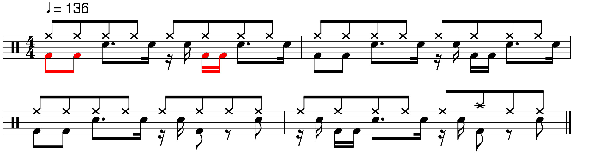

Music Programming Languages
Creating and Analyzing Tonal Music and Soundscapes
Jay Coskey
jay<dot>coskey{at}gmail<dot>com
2016-05-04
reveal.js tips: Use n or <space> to advance to the next slide. Use p to return to the previous slide. Use <Esc> to toggle an overview of all slides. Use ? to see a list of all keyboard commands. Use s to see the speaker notes.
◁ Introduction ▷
|
"To play the wrong note is insignificant; to play without passion is inexcusable."
- Beethoven
Music runs deep through the human psyche:
Traditional training vs. software
Any room for non-humans?
|

Happy Birthday: original & modified 
In The Mood (bars 5-8): original & swing |
{kind=link}
Introduction — Tonal Music (*)
Examples: "Happy Birthday to You", "Greensleeves", "Yellow Submarine"
(*) Here the term "tonal music" is meant to refer to any music consisting of clearly recognizable tones. The term does not necessarily indicate the presence of a "tonal focus". Any better terminology? |


|
Introduction — Programmer's Intro to Music
Every note is injected into the output stream — just like a debug print statement!
Notes
Keys
Chords
Notes
- A temperment is a mapping from notes to frequencies. (std = "equal temperment")
- A pitch class (such as C) is an equivalence class of notes differing by a multiple of an octave.
- A note (such as C4 = middle C) is a pair (pitch class, octave), and has a specific frequency.
- Notes have multiple representations (e.g.,, C♯ = D♭). The same in some ways; different in others.
Keys
- A key (same as a scale) is a subset of pitch classes selected for performance or analysis.
- Key of C Major = [C, D, E, F, G, A, B], with semitone gap count [2, 2, 1, 2, 2, 2, 1]
- Key of F# minor = [F#, G#, A, B, C#, D, E] with semitone gap count [2, 1, 2, 2, 1, 2, 2]
Chords
- A chord is 3+ notes played at once. (E.g., C = C Major = {C, E, G})
- Chords with names like major, minor, diminished, etc., are independent of scale.
- Example: C4 Major seventh chord = Copies of C4 shifted up by {0, 4, 7, 11} semitones.
- Chords with names like I-V-vi-iii-IV-I-IV-V are scale-specific.
- The Roman # = the base note of the chord; Case = Major/minor
Introduction — Soundscapes
Soundscape examples: The THX Sound Effect
("Deep Sound"), or the
Futurama Theme
Most of this talk will focus on tonal music.
- More amorphous than tonal music.
- Often worked on by Digital Audio Workstations (DAWs).
- There are DSLs for sound processing, but most DAWs are written in C++.
- Why? Speed. Note that sound can be represented by arrays of numbers,
and the language traits needed for numerical arrays was pretty solid by 1957,
when Backus wrote Fortran.
- Why? Speed. Note that sound can be represented by arrays of numbers,
Most of this talk will focus on tonal music.
Introduction — Other Use Cases
- Music Data Mining
- Music corpora (e.g., Wikifonia), compression, storage, indexing, tagging
- Assisted and autonomous composition, including stochastic systems
- Generations of chords from melody (e.g., using HMMs)
- Instrument, artist, genre, mood identification (using signal processing)
- Measuring song similarity (e.g., copyright infringement), incl. phrase identification
- Song search (incl. search by humming) & recommendations, using metadata
- Detection duplicated subexpressions and nearly-duplicated subexpressions.
- Geralize string algorithms to music (diff, distance, etc.)
- Physical simulation of instruments and acoustics
- Visualization
Introduction — Mathematical Music Theory
- Three-note chord transformations first formally explored by Hugo Riemann (1849-1919)
- A Schritt transposes one chord (i.e., shifts its frequency).
- A Wechsel changed a major triad into a minor triad and vice versa.
- Later generalized to P, L, R operations in Neo-Riemannian Theory and Schenkerian analysis.
- More recent work:
- Transformational theory, by David Lewin, 1980s.
- Generalized Contextual Groups (extension of the PLR group), by Fiore and Satyendra, 2005.
- Uniform Triadic Transformations UTTs, by Julian ("Jay") Hook, 2002.
Q: How useful in addressing issues outside their scope?
Don't forget the human listener, and don't mistake pattern for passion.
Introduction — Music Programming Languages (MPLs)
- There are 20+ high-level MPLs.
- More like 100+ if you include transcription-oriented ones (think HTML, but for music).
- Soundscape DSLs came first ... but now there's a lot of support for melodic music.
- Here is a short list of a few:
MUSIC-N 1957 A very early music DSL, which gave rise to many others. Euterpea 2012 Music DSL in Haskell spanning tonal music and soundscapes, composition and analysis. Csound 1986 RTperformance, sound synth, algorithmic composition, acoustic research Pure Data (Pd) 1990s A graphical language for RT audio+video synthesis, like Max/MSP in the “Patcher” family ChucK 2003 RT synthesis, live coding, pedagogy, acoustic research, algo composition SuperCollider (SC) 1996 Smalltalk-inspired language. RT synthesis, live coding, algorithmic composition, acoustic research - Overtone — A toolkit w/ a Closure API to SC and the compositional library “Leipzig”
- Skoarcy — A toolset in Skoar, a high-level music composition DSL that runs on SC
Strasheela 2004-2012 Constraint-based composition, based on the Oz language
Introduction — Music App File Formats
- MusicXML is the "universal donor" file format.
- It is output by the scorewriter apps (& Stresheela).
- Below is a partial diagram.
◁ Song Transcription Languages ▷
MPLs without variables or loops can still be suitable for transcription and song DBs.
Transcription — MusicXML and LilyPond
Both of these involve the sound of a piece and the appearance of its score.
(Content and display styling are not as separated as in today's HTML+CSS.)
(Content and display styling are not as separated as in today's HTML+CSS.)
- MusicXML: Standard format for computer exchange of score info
- Most music apps read and/or write MusicXML.
- Significant undertaking to support (schema is ~5400 lines)
- LilyPond: Popular human-writeable system for recording score info
- Many convenience features, e.g., chord names, relative pitch
- Frescobaldi = separate GUI front-end
\version "2.18.2"
\header { title = "Happy Birthday to You" }
global = { \key c \major
\time 3/4
}
right = \relative c'' {\global g8 g8 a4 g4 c4 b2 }
left = \relative c {\global r4 \chordmode{c,2} r4 <d f g>2}
\score {
\new PianoStaff \with {instrumentName = "Piano"}
<<
\new Staff = "right" \with {midiInstrument = "acoustic grand"} \right
\new Staff = "left" \with {midiInstrument = "acoustic grand"} {\clef bass \left}
>>
\layout { }
\midi {\tempo 4=100}
}
Transcription — More on MusicXML
<score-partwise> <== Show the 1st part, then 2nd, etc.
<work>
<work-title>Happy Birthday to You</work-title>
</work>
...
<part-list>...<part-name>Piano</part-name>...</part-list>
<part id="P1">
<measure number="1" width="273.03">
...
<note default-x="78.29" default-y="-30.00"> <== Just showing the first note here
<pitch>
<step>G</step>
<octave>4</octave>
</pitch>
<duration>1</duration>
<voice>1</voice>
<type>eighth</type>
<stem>up</stem>
<staff>1</staff>
<beam number="1">begin</beam>
</note>
...
</measure>
...
</part>
</score-partwise>
Transcription — More on LilyPond
LilyPond is useful for printing beautiful scores.
\header {
title = "Mary Had a Little Lamb"
}
song = \relative c' {
\clef treble
\key c \major
\time 4/4
e4 d c d e e e2 d4 d d2 e4 e e2
e4 d c d e e e c d d e d c2 r2
}
\score { \new Staff \song }
- Notes can be specified with relative or absolute pitches.
- (In chordmode, absolute pitches only)
- LilyPond supports contemporary, antique, and obscure formats.
- If you think something can't be done...
you probably haven't read enough of the documentation.
Transcription — ABC
- Brief: ABC notation (v2.1 - Dec 2011) is concise, popular, and well-supported.
- See abcnotation.com for apps that support this format.
- See this Quick Reference by Stephen Merrony.
- Don't be fooled by the simplicity of the format: countless transcription details are supported.
T:Mary had a little lamb M:C % meter L:1/4 % basic note length K:F % key AGFG|AAA2|GGG2|AAA2| AGFG|AAAA|GGAG|F4|]
| "^" / "_" | sharp / flat (moves note up/down one semitone) |
| "<apostrophe>" / "<comma>" | increments / decrements octave for given note |
| "|" (pipe) | Bar line. (Lots of variations available.) |
| "[", "]" | Grouping of notes in chord |
| A2, A3, A4, A5, A6, etc. | Multiples of the default length of an 'A' note; |
| A/2, A/3, A/4, A/5, A/6, etc. | Fractions of the default length of an 'A' note; |
Transcription — Alda
Brief: Alda is a Clojure-based tonal music DSL with a notation similar to that of ABC.
- Alda (inspired by LilyPond and Music Macro Language) tries to find
the "sweet spot" between simple/intuitive syntax and depth of features.
It's implemented in Clojure, and emits a Clojure DSL,
which is exposed as a library.
piano: o3 g8 a b > c d e f+ g | a b > c d e f+ g4 g8 f+ e d c < b a g | f+ e d c < b a g4 << g1/>g/>g/b/>d/g
| "+" / "-" | sharp / flat (moves note up/down one semitone) |
| o | set default octave |
| ">" / "<" | increment / decrement default octave |
| "|" (pipe) | For readability only; ignored by the compiler |
| "/" | Separator for notes in chord |
| 1, 2, 4, etc. | whole, 1/2, 1/4, etc. (as in LilyPond) |
| <periods> | Dotted notes (as in LilyPond) |
◁ Euterpea (since 2012) ▷
Brief: Euterpea (v2) is a music DSL embedded in Haskell. It evolved from earlier HasSound/Haskore.
- First up because:
- (a) Supports both tonal and full-spectrum music
- (b) Core similicity ⇒ Better focus on the domain of music itself.
- Euterpea & lib/PDF "The Haskell School of Music" (HSoM) was started by the late Paul Hudak.
- Now maintained by Quick & Winograd-Cort
Euterpea — Getting Started
Haskell School of Music
- Download the PDF "Haskell School of Music" (HSoM.pdf). (Decent into to Haskell.)
- Can be thought of as a sequel to Paul Hudak's "The Haskell School of Expression" (2000).
Installation
- Read installation instructions at http://www.euterpea.com/download-and-installation/
- Install the 32-bit version of Haskell Platform. (Sound doesn't work w/ 64-bit version.)
- Install Euterpea2 and the Haskell School of Music (HSoM) from github.
- Test installation ("MUI" = "Musical User Interface)
% ghci ghci> import Euterpea ghci> play $ c 4 qn -- Play a quarter note, with sensible defaults ghci> import HSoM ghci> :load HSoM.Examples.MUIExamples2 ghci> import HSoM.Examples.MUIExamples2 ghci> bifurcate -- GUI app/test that lives in MUIExamples2
Euterpea — Modeling (Tonal) Music
At the heart of Euterpea's representation of music is the following Primitive:
The function "play" uses defaults to perform conversions:
data Primitive = Note Dur Pitch | Rest DurType "Music" consists of Primitive events: glued together
- sequentially (w/ operator :+:)
- in parallel (with operator :=:), or
- tagged with contextual control information.
data Music a = Prim (Primitive a) -- primitive value | Music a :+: Music a -- sequential composition | Music a :=: Music a -- parallel composition | Modify Control (Music a) -- modifierSo the different constructors of Music are Prim, (:+:), (:=:), and Modify.
The function "play" uses defaults to perform conversions:
Music ==> to Music1 (non-parameterized) ==> [MEvent] ==> [MidiMessage]The final MidiMessage list is sent to a MIDI output.
Euterpea — A short example
To play one or a few simple notes:
import Euterpea c :: Octave -> Dur -> Music Pitch play $ c 4 qn mapM (\octave -> play $ c octave qn) [0 .. 8] -- Play C notes.Here is a slightly more complex: a basic version of Frère Jacques (from HSoM).
twice m = m :+: m fj1, fj2, fj3, fj4, fjNotes, fj :: Music Pitch fj1 = c 4 qn :+: d 4 qn :+: e 4 qn :+: c 4 qn fj2 = e 4 qn :+: f 4 qn :+: g 4 hn fj3 = g 4 en :+: a 4 en :+: g 4 en :+: f 4 en :+: e 4 qn :+: c 4 qn fj4 = c 4 qn :+: g 3 qn :+: c 4 hn fjNotes = twice fj1 :+: twice fj2 :+: twice fj3 :+: twice fj4 fj = Modify (Tempo 4) $ Modify (Instrument AcousticGrandPiano) fjNotes play :: Performable a => Music a -> IO () play fj
Euterpea — Percussion
Here is percussion staff notation for the
"Amen Break"
(
play),
a famous drum solo.

Wikipedia (modified)
data Beat = Beat { bDur :: Dur, bHeard :: Int, bAcc :: Int }
type Beats = [Beat]
infixr 6 .+.
infixr 7 .*.
(.*.) n bs = concat $ replicate n bs
(.+.) bs1 bs2 = bs1 ++ bs2
beats2m :: PercussionSound -> Beats -> Music Pitch
beats2m percInstr [] = rest 0
beats2m percInstr (Beat { bDur=d, bHeard=h, bAcc=a } : beats)
= m0 :+: (beats2m percInstr beats)
where m = Modify (Instrument Percussion) $ perc percInstr d
m0 = case (h,a) of
(0, _) -> rest d -- Silent "beat"
(1, 0) -> m -- Unaccented beat
(1, 1) -> Modify (Phrase [Dyn (Accent 1.5)]) m
instrB = AcousticBassDrum
mkBeat d h a = [Beat { bDur = d, bHeard = h, bAcc = a }]
qns = mkBeat qn 0 0; ens = mkBeat en 0 0; enb = mkBeat en 1 0; snb = mkBeat sn 1 0
amen1b = beats2m instrB $ 2.*.enb .+. qns .+. ens .+. 2.*.snb .+. qns
Euterpea — Creating a Performance
We can replace play with the more explicit version that has more args:

- The "data" — Context
- The "strategy" — PMap ("Player Map") — which Player to use for which instrument
playA :: (ToMusic1 a, Control.DeepSeq.NFData a) => PMap Note1 -> Context Note1 -> Music a -> IO()The Player determines how to interpret
- note attributes (e.g., Pizzicato)
- and phrase attributes (e.g., Crescendo)
data Context a = Context { cTime :: PTime, cPlayer :: Player a
, cInst :: InstrumentName, cDur :: DurT
, cPch :: AbsPitch, cVol :: Volume
, cKey :: (PitchClass, Mode)
}
data Player a = MkPlayer { pName :: PlayerName -- ID for selection
, playNote :: NoteFun a -- Interp. notes
, interpPhrase :: PhraseFun a -- Interp. phrases
-- , notatePlayer :: NotateFun -- Removed.
}
Euterpea — A Simple Phrase Attribute
How to implement a phrase attribute like Crescendo,
that increases the volume of notes?
We would change the volume of each note (MEvent) in a Performance.
We would change the volume of each note (MEvent) in a Performance.
myPasHandler :: PhraseAttribute -> Performance -> Performance
myPasHandler (Dyn (Crescendo x)) pf = boostVolsBy x pf
where t0 = eTime (head performance)
perfDur :: Dur
perfDur = sum $ map eDur performance
propTime :: PTime -> Rational
propTime t = (t - t0) / perfDur
propVolDelta :: PTime -> Rational
propVolDelta t = x * (propTime t)
newVol t v = round((1 + (propVolDelta t)) * (fromIntegral v))
boostMEventVol (e@MEvent {eTime = t, eVol = v})
= e { eVol = trace ("Vol=" ++ show (newVol t v))
(newVol t v)
}
boostVolsBy :: Rational -> [MEvent] -> [MEvent]
boostVolsBy x pf = map boostMEventVol pf
myPasHandler pa pf = defPasHandler pa pf
Euterpea — The "Ragtimify" Use Case
Ragtime pieces (think of "The Entertainer"
[play])
often have a baseline that alternates between chords and notes or pairs.
This gives the ragtime piece it's characteristic pulse.
 Suppose you want a Player to output a ragtime version of music
with baseline chords.
Suppose you want a Player to output a ragtime version of music
with baseline chords.
Or you want to write a function that transforms a Music arg into a ragtime version.
You might hope to first find the Chord objects by....
But if your music is written in Euterpea, there are no "Chord objects"! Because of how Music is defined, the chords are not explicitly recorded. Instead, they're recorded as something like:
⇒ More costly extraction of structure from the piece later.
Or you want to write a function that transforms a Music arg into a ragtime version.
You might hope to first find the Chord objects by....
But if your music is written in Euterpea, there are no "Chord objects"! Because of how Music is defined, the chords are not explicitly recorded. Instead, they're recorded as something like:
(note1 :=: (note2 :=: (note3 :=: note4)))So ... Simplicity of internal representation chosen
⇒ More costly extraction of structure from the piece later.
Euterpea — Creating Custom Sounds
Advanced: Euterpea also supports more general sound creation using Arrows
(see Control.Arrow).
(>>>) :: SF a b -> SF b c -> SF a c -- Left-to-right composition (<<<) :: SF b c -> SF a b -> SF a c -- Right-to-left composition z <- sigFunc -< (x, y) -- Signal function
{-# LANGUAGE Arrows #-}
module Euterpea.Examples.SigFuns where
import Euterpea
import Control.Arrow ((>>>),(<<<),arr)
s4 :: Clock c => SigFun c () Double
s4 = proc () -> do
f0 <- oscFixed 440 -< ()
f1 <- oscFixed 880 -< ()
f2 <- oscFixed 1320 -< ()
outA -< (f0 + 0.5*f1 + 0.33*f2) / 1.83
vibrato :: Clock c => Double -> Double -> SigFun c Double Double
vibrato vfrq dep = proc afrq -> do
vib <- osc tab1 0 -< vfrq
aud <- osc tab2 0 -< afrq + vib * dep
outA -< aud
-- type a b = SigFun AudRate a b
s5 :: AudSF () Double
s5 = constA 1000 >>> vibrato 5 20
Euterpea — Custom Instruments (1/2)
data Instrument Name = AcousticGrandPiano -- See p. 35 of HSoM | BrightAcousticPiano | ... | Custom String deriving (Show, Eq, Ord)This can be used as follows (see Chapter 19 of HSoM)
myMandolinName :: InstrumentName -- Or myFlugelhorn or myUkulele
myMandolinName = Custom "My Mandolin"
type Instr a = Dur -> AbsPitch -> Volume -> [Double] -> a
This is commonly used with the type variable a being
"Instr (AudSF () Double)".
The list of parameters ([Double], above) are handled as determined by the instrument designer.
Euterpea — Custom Instruments (2/2)
Let's use the vibrato function defined earlier as a starting point. (See Fig. 19.4 in HSoM.)
- Step #1: Convert a signal function into an instance of type Instr.
For example, using vibrato:
myMandolin :: Instr (AudSF () Double) -- Monaural: Could choose stereo instead. myMandolin dur ap vol [vfrq, dep] = proc () -> do vib <- osc tab1 () -< vfrq aud <- osc tab2 () -< apToHz ap + vib * dep outA -< aud - Step #2: Connect the instrument name to the instrument definition.
type InstrMap a = [(InstrumentName, Instr a)] myInstrMap :: InstrMap (AudSF () Double) myInstrMap = [(myMandolinName, myMandolin)]
- Step #3: Use the Euterpea function renderSF
renderSF :: (Performable a, AudioSample b, Clock c) => Music a -> InstrMap (SigFun p () b) -> (Double, SigFun p () b) - Finally:
mandolinMelody = instrument myMandolinName $ ...music... (dur, sigFun) = renderSF mandolinMelody myInstrMap main = outFile "mandolinMelody.wav" dur sigFun
Euterpea — Programmer's Intro to Music Programming
- Represent compositions in terms of smaller sub-compositions ("pieces"):
- Use names to reflect structure (e.g., sonata_violin_1_4).
- Consider putting measures on separate lines.
- Identify/extract duplicate subexpressions & other structures.
- Use functions to extract commonality from near-duplicate subexpressions.
- Perform validation tests:
- Validate that all expected instruments are present.
- Validate that all pieces have the expected duration.
- Perform live testing:
- Listening to compositions will help detect some issues.
- Play melodies in parallel to detect differences/intervals.
- Derive metrics to be used in testing:
- Just as images can be associated with color histograms,
music slices can be associated (via FFTs) with frequency histograms.
- Just as images can be associated with color histograms,
Euterpea — More Info
- The HSoM introduces
Arrow-based Functional Reactive Programming (FRP) via FRP.UISF.
- Good place to learn more on UISF: Daniel Winograd-Cort's UISF Examples on github.
- UISF is not as popular/mature as some other Haskell FRP systems. such as Yampa, Netwire, Reflex, Sodium, and Reactive Banana. A good discussion of these can be found here.
- Many other MPLs have Haskell interfaces, allowing communication between them & Euterpea.
-
Haskell Music Suite:
a slick music DSL inspired by Euterpea and others.
- Focused on score representation
- Does not support soundscapes
- Has a "back end" that supports printing tonal music via LilyPond
- Also has a type called Music, but it's far more complex than Euterpea's.
- The Melisma Music Analyzer is a music analysis app written in Euterpea.
- Kulitta
is a modular Euterpea-based music composition framework by Donya Quick.
It combines generative grammars, theories of harmony (chord spaces),
and available musical phrases to create a composition. - Soundscape time-slices can be converted into frequency histograms via FFTs (Fast Fourier Transforms). The HSoM touches on this in Chapter 20, Spectrum Analysis. A finished application might be a better reference, to avoid a thicket of module dependencies.
◁ Csound (since 1986) ▷
Brief: An opcode-based language (think assembler), based on soundwave generation.
Users can:
Blue is a composition environment for Csound.
Users can:
- Define customized instruments
- The instruments are basically waveforms, but can be custimized to sound like actual instruments.
- Combine them to create music
Blue is a composition environment for Csound.
Csound — A Simple Example
Here is a simple example from the documentation:
<CsoundSynthesizer> <CsOptions> </CsOptions> <CsInstruments> sr = 44100 <== Sample rate (Hz) for audio signals & vars ksmps = 128 <== Sample rate per control-block, e.g., mouse nchnls = 2 <== # of audio channels. Two for stereo. 0dbfs = 1 <== Max output in dBs before clipping instr 2 kFreq expon 100, 5, 1000 ; kFreq set to the output of expon(ential) aOut oscili 0.2, kFreq, 1 ; aOut set to the output of 'oscil' outvalue "freqsweep", kFreq outs aOut, aOut endin </CsInstruments> <CsScore> f 1 0 1024 10 1 ; this function table contains the sine information i 2 0 5 ; the instrument is called at t=0 & plays for 5 sec. e </CsScore> </CsoundSynthesizer>
Csound — Other Language Features
- Instrument parameters: All instruments have 3 fixed params:
- Instrument #
- Start time
- Duration
instr 1 <== This takes 2 extra params: amp & freq. aSine poscil3 p4, p5, 1; <== p4 = 4th param; p5 = 5th param outs aSine, aSine <== One output for each channel endin
- Similarly, function tables can also take extra params.
- We've got if statements and loops!
instr 1 iGreetingCount = 0 loop: <== Any label can be used here iGreetingCount = iGreetingCount + 1 prints "Hello world #%i\n", iGreetingCount if (iGreetingCount < 5) igoto loop endin
◁ ChucK (since 2003) ▷
Brief: ChucK is a strongly-, statically-typed OO language that
creates waveforms with strict timing.
Here is a script that plays a 220 Hz sine wave for 5 seconds.
Here is a script that plays a 220 Hz sine wave for 5 seconds.
<<< "Hello, sine wave" >>> SinOsc s => dac; 0.6 => s.gain; 220 => s.freq; 5::second => now;In this script:
- <<<Stuff inside the angled quotes>>> is evaluated and printed.
- The Sinusoidal Oscillator type, SinOsc, has "gain" (i.e., volume) and "freq" (i.e., pitch) properties.
- "=>" is called the "chuck" operator: it "throws"/"chucks" a value or stream to its destination.
- Sending a duration to "now" causes time to advance.
- Streams in scope output their signals to the dac to create sound.
ChucK — Echo Script
Here is a simple "echo" script that reads from a microphone,
then echoes a slightly delayed and muted version to the speakers. It uses a built-in Audio-to-Digital Converter (ADC) called adc.
// Feedback setup adc => Gain g => dac; g => Gain feedback => DelayL delay => g; 0.75::second => delay.max => delay.delay; 0.5 => feedback.gain; // Note: gain < 1. 0.75 => delay.gain; while (true) 1::second => now;
ChucK — Instrument Modeling
Here's a simplified version of a plucked string, modified from the book
Programming for Musicians and Digital Arists: Creating music with ChucK
(2015).
// Karplus-Strong model of a plucked string Impulse imp => Delay plucked => dac; plucked => plucked; // Feedback 441.0::samp => plucked.delay; // Sample rate 0.98 => plucked.gain; // Round-trip gain < 1 1.0 => imp.next; // "Pluck" impulse 5.0::second => now; // The string resonates
- Note the feedback connecting "plucked" to itself.
- The action of a plucked string depends on its action at previous moments.
ChucK — More Info
- A 3-note chord can be represented by an array of SinOsc objects: SinOsc chord[3];
- ChucK uses the whimsical terms "shreds" and "spork" for processes and forks.
- Scripted and compiled plug-ins are called Chugens and ChuGins.
- Different instruments go into different "shreds", & can communicate using Events.
- To emulate rests, have time advance in a static scope without audio streams.
- Notes placed in function calls are in a different static scope.
- For stereo, dac has fields called .left and .right.
- For quadraphonic sound, use the .chan field.
- ChucK can run in "live performance mode", where a script is updated while running.
◁ SuperCollider (SC) (since 1996) ▷
Brief: SC is a Smalltalk-like OO language that supports live performances.
Here is a brief code snippet that prints out the value of 5! ("five factorial"):
- Named in 1993 after the cancelled Superconducting Super Collider project
- Supports plug-ins, MIDI data, live coding, and communication with external devices.
15.squared // Evaluates to 225.
[45, 13, 10].sort // Evaluates to [10, 13, 45]
5 pow: 8 // Same as 5.pow(8)
10.do({ "Hello world".postln }) // Writes to the "Post" pane.
Caution: Binary operators are evaluated in left-to-right order,
so 1 + 3 * 5 yields 20, not 16.
Here is a brief code snippet that prints out the value of 5! ("five factorial"):
var factorial = { | n |
var result = 1;
n do: { | i | result = result * (i + 1) };
result;
};
factorial.(5).postln;
SuperCollider — The Basics
- SuperCollider has a client-server design, like IPython/Jupyter.
- The client's interpreter starts automatically.
- A local audio server can be started with the command
s.boot
where the variable "s" is reserved to represent the server.
- Client-server synchronization uses a network protocol called OSC (Open Sound Control) and message tags with execution time in NTP format.
- In the IDE: Ctrl-<Enter> = execute; Ctrl-<period> = terminate.
- The Help Browser is easy to use, though some entries have minimal information.
- Focus on signal processing, creating envelopes of sound,
and combining them with a family of "pattern" classes (e.g., Pbind, Pchain, etc.).
- Pseq: Plays array values sequentially.
- Prand/Pshuf: Plays array values in random/shuffled order
- Pkey: Copies sequence from a supplied key
- Pbind: Gives names to pattern result values
- Pchain: Feed the output of one pattern into the input of the next
- It's possible to emulate specific instruments, but not commonly done.
SuperCollider — Sine Waves
A (non-terminating) sine wave at 440 Hz can be played at half-volume with
{ SinOsc.ar(440, phase: 0, mul: 0.5, add: 0) }.play; // Keyword args
or
{ SinOsc.ar(440, 0, 0.5, 0) }.play; // Positional args
or just
{ SinOsc.ar(440) }.play; // Omitting arguments with default values
where "ar" is the "audio rate" constructor of the SinOsc class.
UGen is the abstract superclass of all "unit generators", which represent signals. Some examples:
- Impulse, a class that represents a simple sound;
- LFSaw, a class that represents a low-frequency sawtooth oscillator (cf. SinOsc);
- PMOsc, a class that represents a phase modulation oscillator (cf. SinOsc);
- EnvGen, which wraps another signal with an "envelope";
- Latch, which wraps another signal with a conditional filter.
SuperCollider — Another Example
Lastly, here is a short piece that creates a cascade of random pitches
that varies more quickly when the mouse is moved to the right-hand side of the IDE window.
{
var freq, latchrate, index, ratio, env, speed = 9;
speed = MouseX.kr(2, 20);
latchrate = speed * 1.61803399;
index = Latch.kr(
LFSaw.kr(latchrate, mul: 4, add: 8),
Impulse.kr(speed)
);
freq = Latch.kr(
LFSaw.kr(latchrate, mul: 36, add: 60),
Impulse.kr(speed)
).round(1).midicps;
ratio = 2.01;
env = EnvGen.kr(Env.perc(0, 2/speed), gate: Impulse.kr(speed));
Out.ar(0, PMOsc.ar([freq, freq * 1.5],
[freq * ratio, freq * 1.5 * ratio],
index,
mul: env * 0.5)
)}.play
SuperCollider — Overtone & Leipzig
Overtone is a Clojure-based language
wrapping SuperCollider,
Leipzig
is a composition lib used with Overtone, and
Leiningen
is a Leipzig template library.
Below is code from a song called
"Tuesday".
(definst metallia [freq 440 dur 1 volume 1.0]
(-> (sin-osc freq (sin-osc 1))
(+ (sin-osc (* 1/2 freq) (sin-osc 1/3)))
(clip2 (mul-add (saw 1/4) 0.2 0.7))
(* (env-gen (adsr 0.03 0.6 0.3) (line:kr 1 0 dur) :action FREE))
(* 1/4 volume)))
(defn minor [chord] (update-in chord [:iii] (scale/from -1/2)))
(def melody
(->>
(phrase [2/3 13/3 5/3 9/3 1/3 2/3 13/3 2/3 13/3]
[ 1 2 1 0 0 1 2 3 0])
(where :pitch scale/raise)
(where :part (is :melody))))
See Overtone examples for more sample code. Note the three distinct functions above:
- def — What you'd expect. The operator "->>" is a Clojure macro.
- defn — Same as def, but this adds metadata to the defined var.
- definst — Defines an instrument.
◁ Pure Data (Pd) (1996 - 2014) ▷
Brief: Pd is similar to SC (soundscapes & live performance), but also supports visual programming.
- Pd is patterned after the commercial project Max/MSP (originally by IRCAM; now sold by Cycling'74)
- The user edits signal diagrams similar to circuit diagrams.
- Subsystems can be abstracted as a Pd box with inputs and outputs.
- Section 4 of the book Designing Sound (2010) explains how to make 35 different sounds, from helicopters to running water.
Pure Data (Pd) — A Simple Example
- A "toggle box" (marked with 'X') feeds a metronome to set a beat.
- Two subsystems pick up that beat — one for each speaker.
- In this diagram, both oscillators and delays have fixed values.
- Message boxes ⇒ Number boxes ⇒ Signal multiplication ⇒ L & R audio.
Pure Data (Pd) — More Info
- Recommendation: Choose Pd-Extended (or another derivative) over Pd-Vanilla.
- Install GEM
= "Graphics Environment for Multimedia" = plug-in library of Pd sounds
- GEM's FLOSS manual, and FAQ
- Pd computes audio in 64-sample blocks using a 3-block buffer & sends to audio output.
- This prohibits DSP loops, which would cause deadlock.
Related Language: Faust
- Pure Data can be extended with "externals" written in Faust.
- Faust (Functional AUdio STream) is a DSL for signal processing.
- It's text-based, but has a GUI called Faustworks
- It's block-oriented, with five composition operators that mirror Haskell's Arrow syntax.
| Faust | Haskell/Arrow | Meaning |
|---|---|---|
| f ~ g | <See wiki page> | Recursive composition |
| f , g | f *** g | Parallel composition |
| f : g | f >>> g | Sequential composition |
| f <: g | f >> ^h >>> g | Split composition (with appropriate function h) |
| f :> g | f >> ^h >>> g | Merge composition (with appropriate function h) |
◁ Strasheela (2004 - 2012) ▷
Brief: Given musical constraints, compositions are found that satisfy them,
if they're satisfiable.
- There are many categories of constraints (e.g., rhythmic, melodic, and harmonic).
- Constraints apply to user-definable "containers".
- Strasheela was Torsten Anders's dissertation project, developed through 2012.
- Strasheela is implemented in the constraint-based language Oz
(similar to Prolog).
- ("Strasheela" is the name of the Scarecrow in the Russian version of The Wizard of Oz.)
- The output of Score.makeScore can be rendered with a choice of formats, including LilyPond, Csound, SuperCollider, or Common Lisp Music (CLM).
Strasheela — Constraints
Example of a constraint called RestrictMelodicInterval.
(
2004 paper
):
Constrait order does matter. Usually it's Timing ⇒ Melodic ⇒ Harmonic.
A novice user should gradually increase the number of constraints to determine impact.
- Consecutive notes are separated by at most a perfect fifth (= 7 semitones).
proc {RestrictMelodicInterval Note1}
Note2 = {Note1 getTimeAspectPredecessor($)}
in
7 >=: {FD.distance {Note1 getPitch($)} {Note2 getPitch($)}}
end
And here is this rule being applied:
{MyScore
forAll(RestrictMelodicInterval
test:fun {$ X}
{X isNote($)} andthen
{X hasTimeAspectPredecessor($)}
end)}
}
A typical Strasheela program can use hundreds of variables and constraints.Constrait order does matter. Usually it's Timing ⇒ Melodic ⇒ Harmonic.
A novice user should gradually increase the number of constraints to determine impact.
Strasheela — Canons
A canon is music with 2+ voices that play time-shifted copies of the same music.
Constraints can ensure that the copies sound harmonious together.
Classic examples: "Row, Row, Row Your Boat" and "Frère Jacques".
An "accompanied canon" has other non-repeating voices.
Here's a short canon found in a few seconds by Strasheela. [play]:
Constraints can ensure that the copies sound harmonious together.
Classic examples: "Row, Row, Row Your Boat" and "Frère Jacques".
An "accompanied canon" has other non-repeating voices.
Here's a short canon found in a few seconds by Strasheela. [play]:
Strasheela — Flexibility & Efficiency
Finding solutions to a system of constraints is a standard computer programming problem.
A challenge is to provide user flexibility while still running efficiently.
Flexibility:
Efficiency:
A challenge is to provide user flexibility while still running efficiently.
Flexibility:
- Strasheela has many pre-defined pattern constraints.
- The user can apply their own Lindenmayer system (i.e., generative grammar).
- Constraints can be applied to containers, which can be nested hierarchically.
One can group together different concurrent parts, or repetitions of a single voice.
(But nesting of containers must be set before the search for a constraint solution begins.) - Constraints can be made into "soft constraints" — more like preferences.
The user can prioritize rules, and how many times soft constraints can be violated.
Efficiency:
- The user can specify the "distribution" strategy to solve the
constraint problem.
Work on a sub-problem can be shut down once parameters are found that are good enough.
◁ Resources ▷
Music & Music Theory
- The Jazz Theory Book (1995), by Mark Levine
- Ragtimify (2013): a PDF on converting scores to Ragtime
- Sweet Anticipation: Music and the Psychology of Expectation (2006)
- How to Compose a Canon (video+text)
- Song databases: The Million Song Dataset | The Theorytab database | Band music | International Music Score Library Project | Project Gutenberg
- Visualization of music by Bach and others
Music Programming & Analysis
- Cheatsheets: Euterpea | Overtone | Pure Data
- Functional Modelling of Musical Harmony
- Analysis of musical structures using monadic parser combinators
- Composing (Music) in Haskell [video]: Use of Braid Theory in Music, starting at 21:00
- A Practical Guide to [SuperCollider] Patterns
Colophon
- Documentation on reveal.js, used to create this deck.
◁ Appendices ▷
Appendix A — Apps & Libraries & Other
| Abjad | Python | Lib | Writing tonal music |
| Ableton Live | M/P/L | DAW | VST (Virt. Studio Tech.) plugins |
| Csound | M/P/L | Lang | Csound API; Plugin devel w/ Cabbage & JUCE |
| Extempore (Schemey) | Mac | Lang | Uses LLVM for live coding, and uses IPC. |
| Faust | M/P/L | Lang | Purely functional DSL for signal processing. |
| Garageband | Mac | App | Audio Unit extensions |
| Humdrum Analysis Toolkit | M/P/L | Toolkit | Flexible with 60+ inter-related tools |
| Impromptu (Schemey) | Mac | Lang | Formerly the core of Extempore. Focus on live coding. |
| Java Sound API | Java | API | Emphasizes low-level control. Compare with the higher-level JMF. |
| Logic Pro | Mac | DAW | JavaScript plugins; Audio Unit extensions |
| Max(& Max/MSP) | Mac/PC | Lang | The "lingua franca" of interactive musical performance software. |
| midi-dot-net | .NET | Lib | Access to MIDI devices |
| MuseScore | M/P/L | App | JavaScript plugins |
| music21 | Python | Lib | Computational musicology; composition |
| NAudio | .NET | Lib | Audio & MIDI |
| Nyquist (Lispy) | M/P/L | Lang | Sound effect plugins work in Audacity |
| OpenMusic (Lispy) | M/P/L | Lang | Visual programming language |
| Processing | M/P/L | Lang | Java-based educational multimedia programming lang |
| Pure Data | M/P/L | Lang | Plugin frameworks: plugin~/ ladspa~/ dssi~. Externals create new primitives. |
| Reaktor | Mac/PC | Synth | A modular synthesizer |
| Reaper | M/P/L | DAW | Plugins and extensions |
| StaffPad | PC | App | Imports/exports MusicXML and MIDI |
| SuperCollider | M/P/L | Lang | "Quarks" extend lang; plugins extend server |
Appendix B — Best Practices & Cautions
- Volume.
- Programs that don't explicitly set volume might by default play at the loudest possible volume.
- Sudden changes in soundscape volume can result in clicks. These can be resolved by adding envelopes to modulate the volume.
- Note that pitch numbering starts at C in each octave, not A.
- For example, the pitch one semitone below C4 is not B4, but B3.
- The MIDI file format has fixed-range values. For example, MIDI notes range from 0 to 127, which can fit in 7 bits. If, say, as the result of a transposition, a note is given a value above 127, it will be truncated, and result in a lower pitch than expected.
- This presentation was made using reveal.js. If you want to attempt to modify the vertical placement of slides on a reveal.js presentation, take a look at the layout() function in reveal.js.
Appendix C — Choosing a Music Programming Language
If you just want to compose music, an app (e.g., MuseScore) might be right for you.
Here are some guidelines on which language to choose.
Here are some guidelines on which language to choose.
| Language/Library | Considerations |
|---|---|
| Euterpea |
|
| Csound |
|
| Chuck |
|
| Pure Data | If it's important to choose a visual programming language |
| SuperCollider |
|
| Strasheela | Support for constraint-based composition |